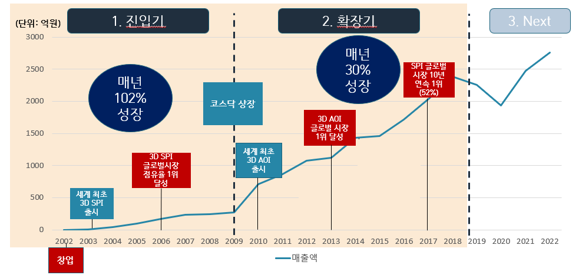
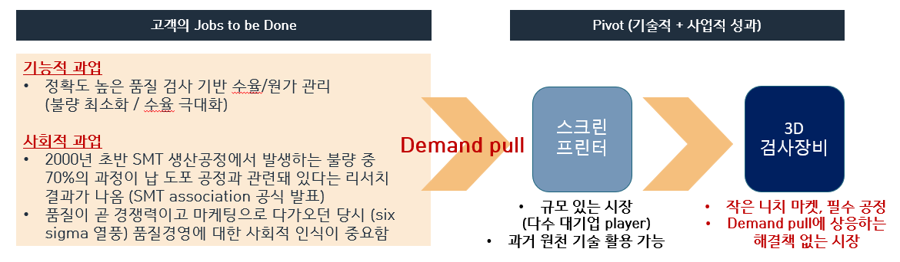
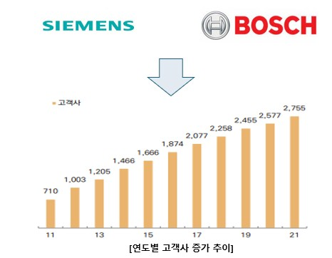
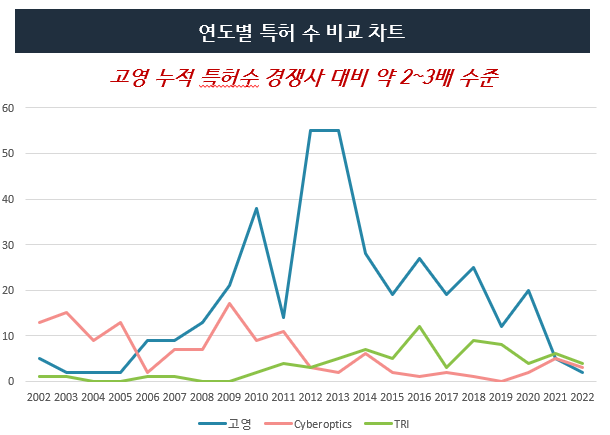

소재부품장비(소부장) 산업은 기술·자본 집약적이고 B2B 고객이 구매에 보수적이어서, 자원이 부족한 벤처기업이 진입해 성장하기에 선천적으로 불리하다. 그럼에도 고영테크놀러지는 창업 4년 만에 글로벌 시장 점유율 1위를 달성하고 16년 연속 유지하고 있다. 본 사례연구는 고영테크놀러지의 시장 진입기와 시장 확장기 전략을 분석해, 소부장 산업 내 B2B 딥테크 벤처기업의 성장 전략을 도출한다.
- 소재부품장비 산업의 자립화를 넘어 글로벌화가 중요한 현 시점에 벤처기업 역할의 중요성이 대두되고 있다.
- 그러나 소재부품장비 산업은 기술 및 자본 집약적 성격을 가지고 있어 자원이 부족한 벤처기업이 도전하기에 제한적이다.
- 본 연구는 이러한 제약조건 속에서 창업 4년 만에 글로벌 시장 점유율 1위를 달성하고 16년 동안 유지하고 있는 고영테크놀러지의 시장진입기 및 시장확장기 전략을 분석한다.
- 이를 통해 소재부품장비 산업 내 벤처기업이 성장을 위한 비즈니스 전략을 도출하는 데 기여하고자 한다.
1. 사례연구 배경 및 목적
대한민국의 소부장 산업은 전체 제조업 생산액의 약 52%, 전체 수출액의 54%를 담당하는 제조업의 뿌리이자 중심이지만, 특정 국가로부터의 수입 의존도가 매우 높다. 2019년 일본의 반도체 핵심 소재 3개 품목 수출 규제로 그 위험성이 부각됐고, 정부는 자립화를 넘어 글로벌화를 목표로 100대 핵심 품목 수입 의존도를 2019년 약 31%에서 2021년 약 25%까지 낮췄다.
소부장 산업은 기술 혁신 속도가 빠르고 기술 집약도가 높아, 존속적 혁신에 최적화된 기존 대기업이 파괴적 혁신에 대응하기 어렵다. 그래서 Clayton Christensen이 '혁신자의 딜레마'에서 말한 파괴적 혁신 기업, 즉 벤처의 역할이 중요하다. 그러나 대규모 R&D 투자가 선행되고 고객이 초기 레퍼런스가 없는 기업에 보수적인 이 산업은, 매 순간 자원의 한계와 싸우는 벤처에 특히 불리한 환경이다.
2. 사례연구 대상 기업 및 산업
국내 1세대 광학·메카트로닉스 분야 연구자 고광일 대표는 2002년 4월, 광학과 메카트로닉스 기술을 융합해 기존 2D 기반 검사장비 시장의 unmet needs를 충족하고자 고영테크놀러지를 설립했다. 주력 제품은 PCB의 납 도포를 검사하는 SPI(Solder Paste Inspection)와 부품 실장을 검사하는 AOI(Automated Optical Inspection) 장비다. 2022년 매출액은 약 2,750억 원, 2023년 1분기 기준 시가총액은 약 1조 원을 상회한다.

고영테크놀러지는 2003년 세계 최초 3D 기반 SPI 검사장비를 상용화했고, 창업 만 4년째인 2006년 해당 시장 글로벌 점유율 1위(50% 이상)를 달성했다. 이어 2010년 또 하나의 세계 최초 제품인 3D 기반 AOI 장비를 상용화해, SPI 시장의 약 2배 규모(3~4천억 원)인 AOI 시장에서도 2013년부터 30% 이상 점유율로 1위에 올랐다. 주요 경쟁사는 미국 Cyberoptics, 일본 CKD, 대만 TRI로 각각 약 10% 수준이며, 이들은 주로 Low-end 장비를 생산하는 것으로 알려졌다.
3. 이론적 배경
연구는 세 가지 이론을 분석 틀로 삼는다. Jobs to be done은 고객이 제품을 도입해 달성하려는 과업을 기능적·감성적·사회적 측면까지 이해해야 진정한 unmet needs를 찾을 수 있다고 본다. Bowling Alley Strategy는 Geoffrey Moore가 캐즘 극복을 위해 제시한 전략으로, 검증된 니치 마켓·고객을 완전완비제품으로 공략해 볼링 핀처럼 주류 시장으로 확장하는 방법이다. Architecture Positioning Strategy(후지모토 다카히로)는 자사 제품과 고객 제품이 인테그럴인지 모듈인지에 따라 네 가지 포지션을 구분하며, 내부 모듈/외부 인테그럴 포지션이 낮은 원가와 높은 판가를 동시에 실현해 수익성을 극대화한다고 본다.
4. 혁신 사례 연구: 시장 진입기
4.1.1 고객 니즈 기반의 제품 혁신
2000년 SMT 산업 협회 보고서는 PCB 소형화로 발생하는 불량의 약 74%가 납 도포 공정(SMT 전 공정)에서 발생한다고 밝혔다. Six Sigma 품질 경영이 중요하게 여겨지던 시기와 맞물려 검사장비 시장의 성장이 기대됐지만, 기존 육안 검사나 2차원 SPI 장비는 도포된 납의 높낮이를 측정할 수 없고 그림자·반사광 등 기능적 한계로 요구 수준의 불량 검출률을 달성할 수 없었다.

고영테크놀러지는 원래 납 도포 스크린 프린터로 사업을 시작했지만, 고광일 대표는 창업 초기 3개월간 삼성전자·LG전자 앞에 거주하며 현직 엔지니어들의 니즈를 파악했다. 그 결과 고객의 진짜 과업은 정확도 높은 품질 검사를 통한 불량 최소화·수율 극대화이며, 3D 기반 검사장비에 강력한 unmet needs가 있음을 확인하고 과감히 검사장비 사업으로 pivot했다.
고영테크놀러지는 업계 최초로 모아레(Moire) 방식의 3차원 측정 기술을 개발해 도포된 납의 높낮이 측정을 가능하게 했다. 경쟁사들이 고가의 레이저 카메라로 여러 번 촬영해 양산 속도를 맞추지 못한 것과 달리, 2차원 장비에 쓰던 area camera와 모아레를 결합해 검사 속도를 획기적으로 단축시켜 세계 최초로 3차원 SPI를 양산 적용했다. 또한 업계 최초 듀얼 프로젝션 방식으로 그림자 문제를 해결해 검사 범위와 정확도를 함께 높였다.
4.1.2 Beachhead Strategy
SMT 시장은 연 4조 원 이상으로 파나소닉·야마하·한화 등 대기업이 참여하지만, SMT 내 검사장비 시장은 연 5천억 원 수준의 니치 시장이라 자본력 높은 대기업과의 경쟁을 피할 수 있었다. 고영테크놀러지는 3D 검사장비가 unmet needs를 충족하면 기존 2D 고객뿐 아니라 육안 검사자나 검사를 포기하던 non-consumer 시장까지 창출할 수 있다는 믿음으로 진입했다.
지멘스가 요구하는 까다로운 과제를 성공적으로 수행하자 지멘스가 고영의 완전완비 검사장비를 선택했고, 이후 글로벌 기업들이 하나둘 고객이 되며 성장이 본격화됐다. 결국 고영테크놀러지는 벤처가 소자본으로 도전할 만한 right niche market을 선정하고, 기술이 뒷받침되지 못하던 unmet needs를 세계 최초 기술로 충족하며, Bowling Alley Strategy로 단기간에 주류 시장에 진입해 창업 4년 만에 글로벌 1위를 달성했다.
5. 혁신 사례 연구: 시장 확장기
5.2.1 Bowling Alley Strategy 활용과 leapfrogging
제조업에서 검사장비는 완제품 품질, 곧 고객의 생존과 직결되므로 레퍼런스가 가격보다 중요한 구매 결정 요소다. 지멘스를 타깃한 Bowling Alley 전략의 결과는 강력한 레퍼런스가 되어, 2004년 한 자릿수였던 고객사가 2011년 710개, 현재 약 3,000개로 늘었다. 고영테크놀러지는 SPI에서 확보한 레퍼런스를 지렛대로, 후발주자로 진입한 AOI 시장에서 선도기업의 중간 궤적을 뛰어넘는 leapfrogging을 실현해 빠르게 1위를 달성했다.

SPI와 AOI는 모두 고가 검사장비로, 고객은 신규 공정 증설 시 동일 제조사로부터 함께 구매해 타 장비와 연동하는 것을 선호한다. 한번 납품돼 인테그럴화된 장비는 높은 switching cost와 lock-in 효과를 낳아, 고영테크놀러지는 사실상 표준 지위 속에서 규모의 경제와 낮아지는 한계비용을 누리며 확장했다.
5.2.2 아키텍처 포지셔닝 이동 전략에 따른 공정 혁신
고영테크놀러지는 매출 대비 경상연구개발비 비율을 약 10%(제조업 평균 약 4%)로 유지하며 공격적으로 선행연구에 투자했고, 경쟁사 대비 약 2~3배 많은 특허를 출원·등록했다.

SPI·AOI 장비는 최종 검사 제품 도메인별 미세조정이 필요해 후지모토의 아키텍처 관점에서 '내부 인테그럴/외부 인테그럴' 포지션이며, 이는 높은 기술력을 요구하지만 수익성이 낮다. 고영테크놀러지는 원가율이 2000년대 중반 거의 100%에서 2007년 이후 급감했는데, 특허 분석과 광학팀 현직자 인터뷰 결과 3차원 측정 센서 등 주요 광학 부품을 자체 개발·내재화하고 모듈화한 것이 원인으로 확인된다. 공통 부품으로 고객 대응을 하는 내부 모듈화를 실현하고 도메인별 검사장비 플랫폼화에 성공하면서, 포지셔닝을 '내부 모듈/외부 인테그럴'로 이동해 낮은 원가와 높은 판가를 동시에 달성하는 공정 혁신을 이뤄냈다.
6. 결론 및 시사점
- 진입기 — 니치 선정과 성능 축 전환: 벤처가 소자본으로 도전할 수 있는 right niche market을 선정하고, 기술로 해결되지 않던 고객의 과업(unmet needs)을 기존 기술 성능의 축을 완전히 전환하는 기술로 충족해야 경쟁력이 있다. non-consumer까지 흡수해 시장 자체를 키운 점도 주효했다.
- 레퍼런스가 최고의 영업 도구: B2B 시장에서는 고객 레퍼런스가 가격보다 중요한 영업 도구이며, 확실한 니치·고객을 겨냥한 Bowling Alley Strategy로 선택과 집중하는 것이 주류 시장 진입에 유효하다.
- 확장기 — 선행연구와 기술경영 역량: 초기 성장에 안주하지 않고 미래 먹거리와 공정 혁신을 위한 선행연구에 지속 투자하며, 이를 계획·실행하는 기술경영 역량이 중요하다. 기술 역량에 비해 경영·사업 역량의 중요성을 낮게 보는 딥테크 벤처는 기술 외 경영 관점에서도 신중히 의사결정할 필요가 있다.